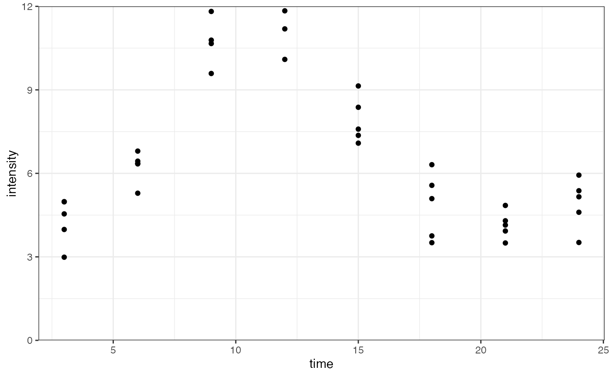
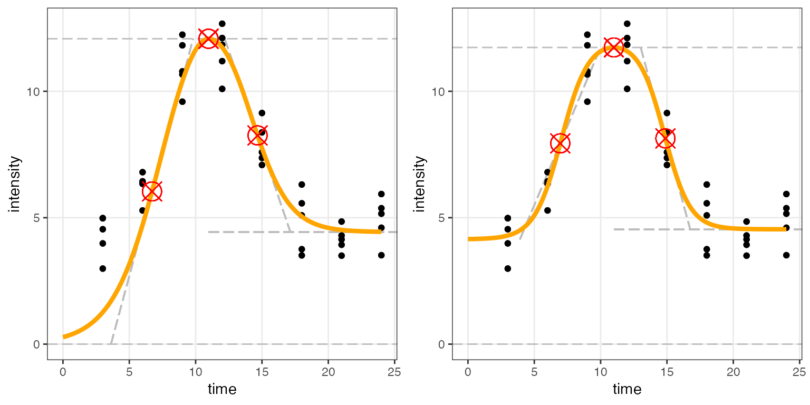
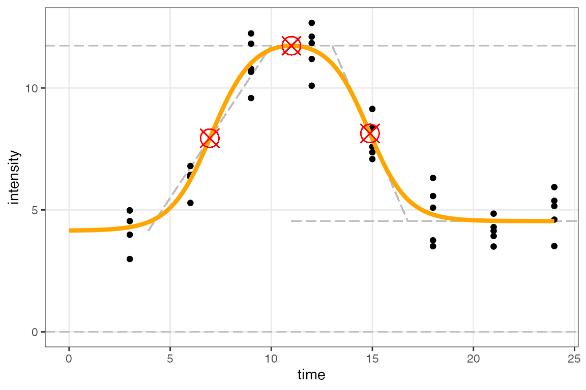

Allowing the lower asymptote parameter to vary freely
Thomas Matheis, Phineus Choi, Sam Butler, Mira Terdiman, Johanna Hardin
2025-11-05
Source:vignettes/h0_functions.Rmd
h0_functions.RmdIntroduction
There may be situations where we want to estimate the lower asymptote
of
freely in our model rather than assuming it always starts at zero, which
is what sicegar assumes by default. For this purpose,
the functions fitAndCategorize() and
figureModelCurves() contain the argument
use_h0 (which has a default value set to
FALSE). Setting the argument to TRUE results
in the same process as usual, using functions ending in _h0
instead of their default counterparts. For example, the functions
multipleFitFunction(),
doublesigmoidalFitFormula(),
parameterCalculation(), and normalizeData()
have _h0 counterparts,
multipleFitFunction_h0(),
doublesigmoidalFitFormula_h0(),
parameterCalculation_h0(), and
normalizeData_h0().
We will demonstrate the differences between letting be estimated freely and assuming it is fixed at zero, first generating data where is not zero:
time <- seq(3, 24, 3)
noise_parameter <- 3
reps <- 5
intensity_noise <- runif(n = length(time)*reps, min = 0, max = 1) * noise_parameter
intensity <- rep(doublesigmoidalFitFormula_h0(time,
finalAsymptoteIntensityRatio = .3,
maximum = 10,
slope1Param = 1,
midPoint1Param = 7,
slope2Param = 1,
midPointDistanceParam = 8,
h0 = 2), reps)
intensity <- intensity + intensity_noise
dataInput <- data.frame(time, intensity)
ggplot(dataInput, aes(time, intensity)) +
geom_point() +
scale_y_continuous(limits = c(0, 12), expand = expansion(mult = c(0, 0))) +
theme_bw()## Warning: Removed 3 rows containing missing values or values outside the scale range
## (`geom_point()`).
Fitting the models to the data
fitAndCategorize() can be applied to the data, first
with default arguments and second by setting the argument
use_h0 to TRUE:
fitObj_zero <- fitAndCategorize(dataInput,
threshold_minimum_for_intensity_maximum = 0.3,
threshold_intensity_range = 0.1,
threshold_t0_max_int = 1E10,
use_h0 = FALSE) # Default
fitObj_free <- fitAndCategorize(dataInput,
threshold_minimum_for_intensity_maximum = 0.3,
threshold_intensity_range = 0.1,
threshold_t0_max_int = 1E10,
use_h0 = TRUE)Using figureModelCurves(), we can visualize the
differences between using the default arguments and letting
be freely estimated.
# Double-sigmoidal fit with parameter related lines
fig_a <- figureModelCurves(dataInput = fitObj_zero$normalizedInput,
doubleSigmoidalFitVector = fitObj_zero$doubleSigmoidalModel,
showParameterRelatedLines = TRUE,
use_h0 = FALSE) # Default
fig_b <- figureModelCurves(dataInput = fitObj_free$normalizedInput,
doubleSigmoidalFitVector = fitObj_free$doubleSigmoidalModel,
showParameterRelatedLines = TRUE,
use_h0 = TRUE)
plot_grid(fig_a, fig_b, ncol = 2) # function from the cowplot package
It is clear that in this situation, using the default arguments result in a worse fit than when is allowed to be estimated freely.
Model fitting components (h0 free)
To fit and plot individual models using a freely estimated
,
we must directly call the _h0 counterparts of each
sicegar function. We have already generated the data
(with
),
so now we can normalize the data.
normalizedInput_free <- normalizeData(dataInput = dataInput,
dataInputName = "doubleSigmoidalSample")
head(normalizedInput_free$timeIntensityData) # the normalized time and intensity data## time intensity
## 1 0.125 0.16070336
## 2 0.250 0.34814874
## 3 0.375 0.79277841
## 4 0.500 0.73392241
## 5 0.625 0.45205169
## 6 0.750 0.07909906We can now call multipleFitFunction_h0() on our data to
be fitted, calculating additional parameters using
parameterCalculation_h0():
# Fit the double-sigmoidal model
doubleSigmoidalModel_free <- multipleFitFunction_h0(dataInput=normalizedInput_free,
model="doublesigmoidal")
doubleSigmoidalModel_free <- parameterCalculation_h0(doubleSigmoidalModel_free)Now that we have obtained a fit, we can use
figureModelCurves() to plot:
# double-sigmoidal fit
figureModelCurves(dataInput = normalizedInput_free,
doubleSigmoidalFitVector = doubleSigmoidalModel_free,
showParameterRelatedLines = TRUE,
use_h0 = TRUE)
Model parameters
Recall that the original model parameters (which generated the data)
are given as
finalAsymptoteIntensityRatio = 0.3, maximum = 10, slope1Param = 1, midPoint1Param = 7, slope2Param = 1, midPointDistanceParam = 8, h0 = 2.
We can recover the parameter estimates from both of the
doubleSigmoidalModel objects created above.
fitObj_zero does not return a value for
(because it is not part of the estimation process). When
is allowed to vary freely, the full set of parameters are estimated to
be much closer to the data generating parameters (as opposed to when
is forced).
fitObj_zero$doubleSigmoidalModel |>
select(finalAsymptoteIntensityRatio_Estimate, maximum_Estimate, slope1Param_Estimate, midPoint1Param_Estimate,
slope2Param_Estimate, midPointDistanceParam_Estimate) |>
c()## $finalAsymptoteIntensityRatio_Estimate
## [1] 0.366972
##
## $maximum_Estimate
## [1] 12.07675
##
## $slope1Param_Estimate
## [1] 0.5302837
##
## $midPoint1Param_Estimate
## [1] 7.619604
##
## $slope2Param_Estimate
## [1] 0.6814152
##
## $midPointDistanceParam_Estimate
## [1] 6.384053
fitObj_free$doubleSigmoidalModel |>
select(finalAsymptoteIntensityRatio_Estimate, maximum_Estimate, slope1Param_Estimate, midPoint1Param_Estimate,
slope2Param_Estimate, midPointDistanceParam_Estimate, h0_Estimate) |> c()## $finalAsymptoteIntensityRatio_Estimate
## [1] 0.3871044
##
## $maximum_Estimate
## [1] 11.73267
##
## $slope1Param_Estimate
## [1] 0.9808639
##
## $midPoint1Param_Estimate
## [1] 7.035747
##
## $slope2Param_Estimate
## [1] 1.03301
##
## $midPointDistanceParam_Estimate
## [1] 7.773474
##
## $h0_Estimate
## [1] 4.147344